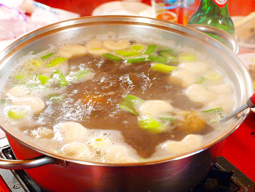
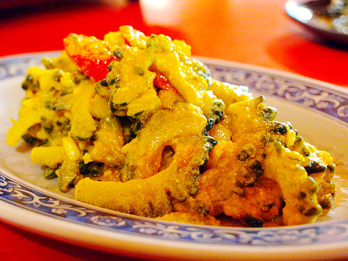
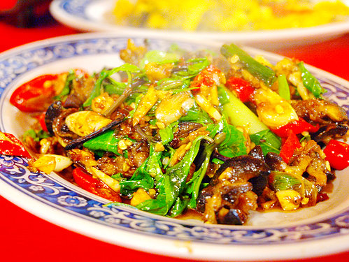

「螺肉蒜」這種東西在市面上其實就有賣,但是吃起來並不怎麼好吃,有種奇怪的味道,而且價格也不便宜,可是在這裡他雖然多加了魷魚,不但沒有魷魚的腥味反而還會回甘,而且經過稍微的估算,價格也不高,因此時常吃不到,所以想嘗試的話一定得必須盡早前往
他們的蚵酥非常的特別，吃起來外酥內軟，不帶半點腥味，比起其他地方真的差很多，要不是蚵仔太乾，不然就是腥味很重，再不然就是吃蚵酥好樣在吃炸粉一樣，差距真的很大，不過最大的問題還是在於價錢，這道料理的價位通常都不低，吃時還得多多考慮

麻油豬心個人建議最好配飯吃，因為如果單吃，到最後會有點油膩，不過最大的優點即是它非常的入味，不吃可惜

個人認為此道料理配飯，絕佳。但是價格不一定，或許是因為季節關係
此道料理也是以配飯為主，不但好下飯，而且可能讓食量小的人想要吃更多，想補足營養的人，可以以此道料理為主軸
想了解更多台南美食，請洽台南人或電免付費電話7087-184-488(請你放心-一輩子-吃飽飽)